University of Utah Computer Center (UUCC) Historical Page
- Here is a list of Computer Center People, now and over the years (since the mid-1960s); a detailed map of UUCC
The Computer Center began as a research project of the Electrical Engineering department in 1958 and was formed as an organization shortly thereafter. The primary users of the Computer Center services were the Electrical Engineering department and others of the College of Engineering. Over the years, as computing and technology needs were identified, the Computer Center worked to fulfill those needs.
The following was written in November 1970 as a description of UUCC:
THE UNIVERSITY OF UTAH COMPUTER CENTER
The University of Utah Computer Center was established in
1959 to provide computer services to the growing university
community for its complex and diverse needs. Currently the Center
also provides its computing services to several off-campus
business groups as well as other schools and universities. There
are several smaller computers on campus, some of which are
connected to the facility at the Computer Center. Although each
of these is a physically separate facility, much of the
University's expertise is consolidated at the Center for the
benefit of the entire campus.
The hardware at the Computer Center consists of a Univac
1108, nine tape drives, six high speed drums, two large mass
storage devices whose capacity is 262 million characters, several
printers, card readers, miscellaneous unit record devices and
communications equipment. In addition the Center has an optical
scanner used for test scoring, a digitizer and a high precision 48
x 60 inch flat bed plotter which can also be used for cutting
mylar.
The Center maintains a library of many programs developed by
its staff as well as several application and statistic programs
such as APT, GPSS, PERT, Linear programming and the BMD programs.
Extended Fortran, Cobol, Algol, Basic and Assembler comprise some
of the languages available to the programmers.
Assistance in numeric analysis, statistical design, business
systems analysis and special programming requirements can be
obtained from members of the technical staff at the Center. On
week-days there is available at no charge a consulting service
intended to minimize difficulty in using computer facilities.
These consultants are qualified to answer questions regarding job
set up, file maintenance, diagnostic messages, control statements
and use of library programs.
The Computer Center is located on the north side of the
campus in the Merrill Engineering Building and is open twenty-four
hours a day seven days a week.
From the beginning and for quite a while, the Computer Center was self-sufficient financially. It worked within a system for cost recovery where services were paid for by the recipients and eventually some basic services were provided for campus at little or no cost, while other services were charged for at a rate to underwrite the campus services. Later, in the 1980's, the University provided a budget for the Computer Center and charging for services to the campus users gradually diminished and service to off-campus customers were for the most part discontinued. The major change came in 1988 when the Sperry Univac mainframe computer was disconnected and removed from the Computer Center. Following are some pictures of people associated with or links to articles about the Computer Center over the years, generally in chronological order.
UUCC parties and events over the years.
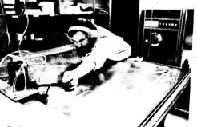
Professor Ron Resch (of Computer Science) cutting the aluminum pieces for the Ukrainian Egg he designed for the Vegreville, Canada Chamber of Commerce (around 1974) on our old Gerber plotter.
-- About computer training in connection with the Marriott Library (1974).
-- About Instruction and Research Computing - with RTB (1974).
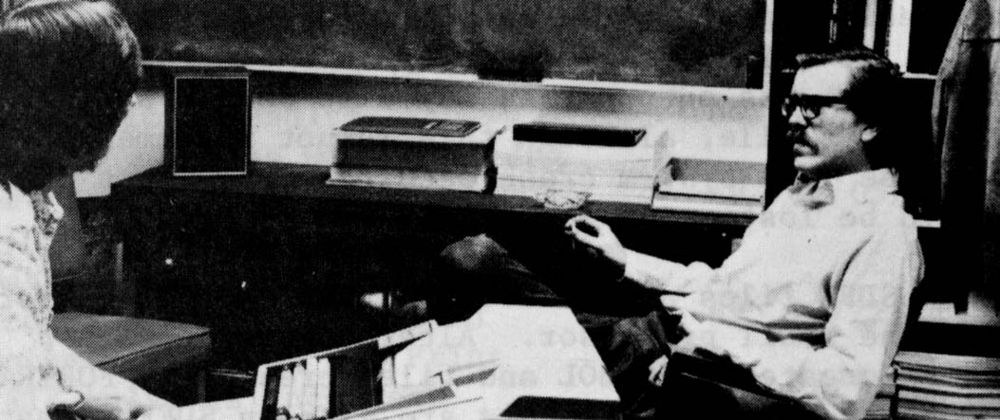
Mark Thomson (left) and LeRoy Eide (right) in systems support (1975).
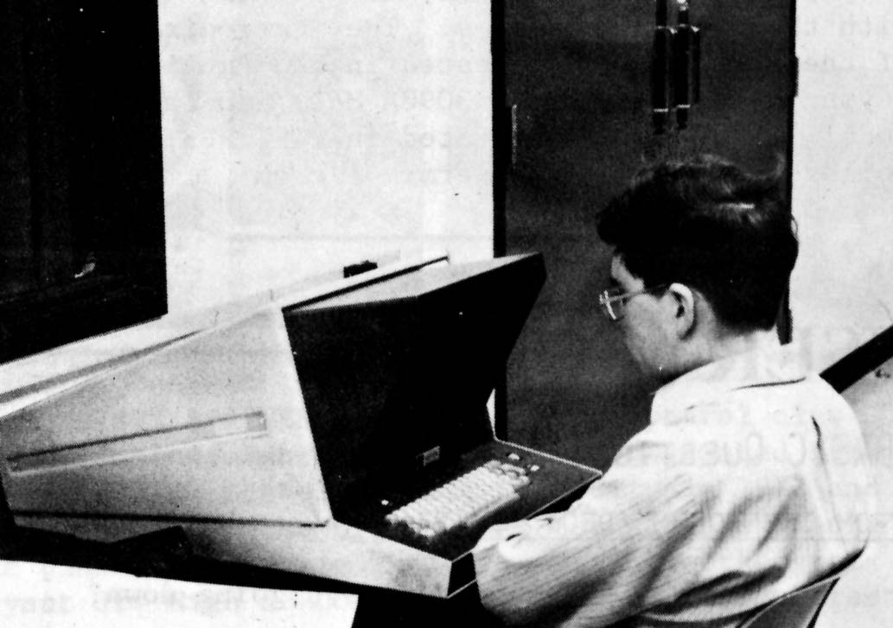
Joseph Buchanan at a Tektronix Terminal (1975).
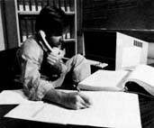
Randy Swalberg (1975).
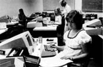
Val Alder Stuff in the Keypunch Room (1975).
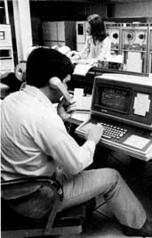
Jim Schlight in the Machine Room (1975).
-- About the Apple Macintosh agreement with the University of Utah (1984).
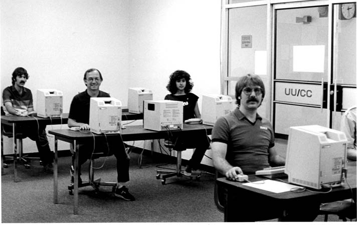
Some UUCC Staff in MacLab: (l to r) Steve Fullerton, Chuck Evans, Elham Ghalambor and Byron Davis (1984).
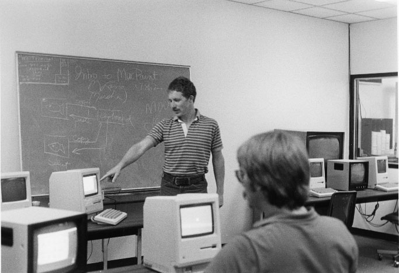
The Macintosh teaching lab (MacLab) in 1984. Dave Huth is at the board.
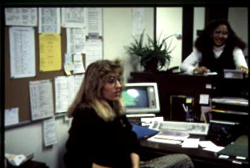
Dawn Ashment and Eva Elkins in the UUCC business office (Dec. 1987).
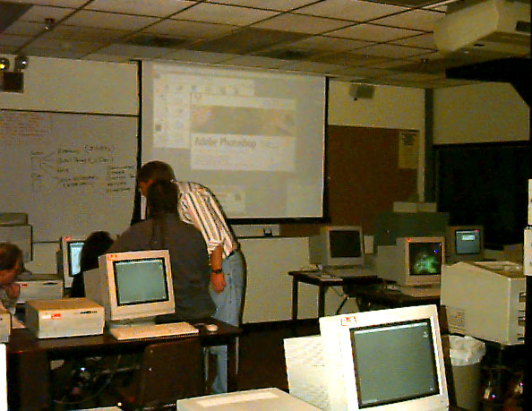
MacLab (MEB 3465) again in 1996. Craig Bennion is the instructor.
Other interesting things:
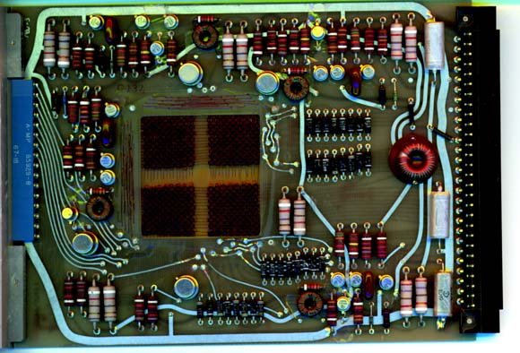
Core memory on a circuit board (ca. 1970's).
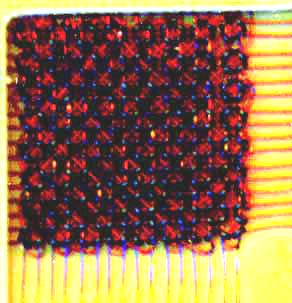Core memory (enlarged).
Last updated: 11/30/09